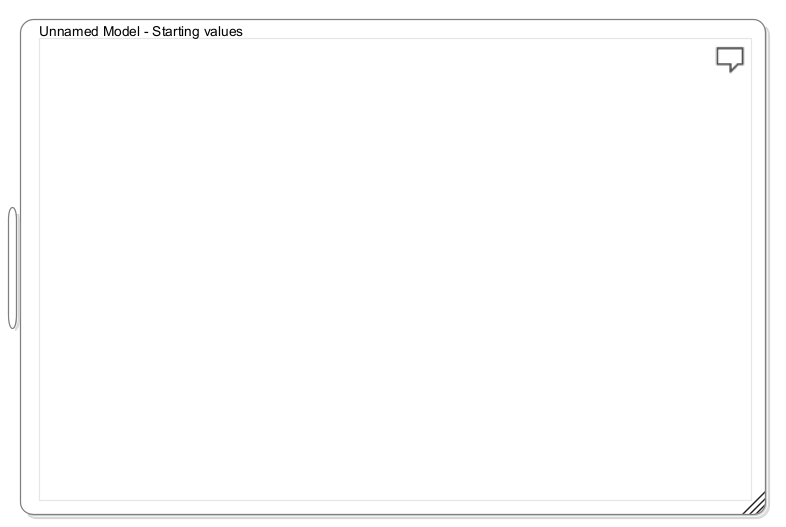
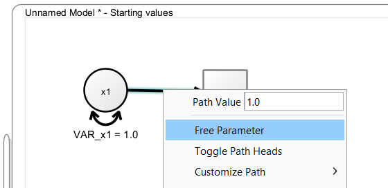
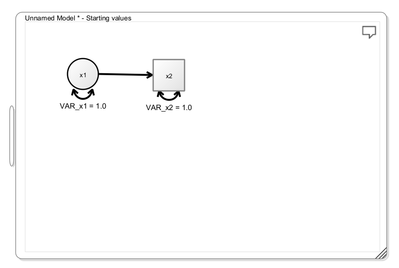
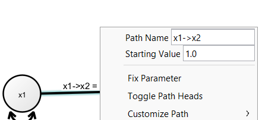
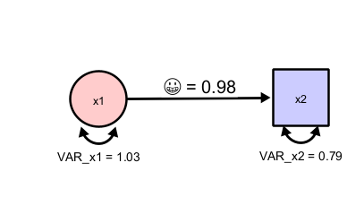
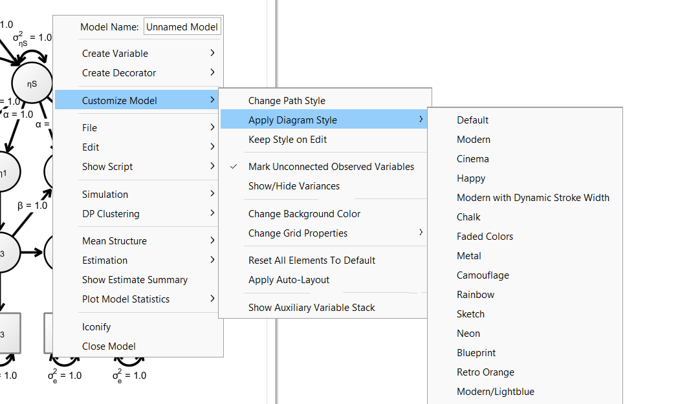
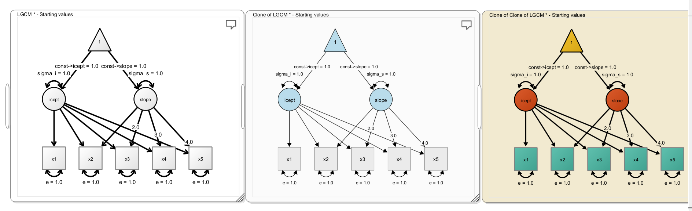
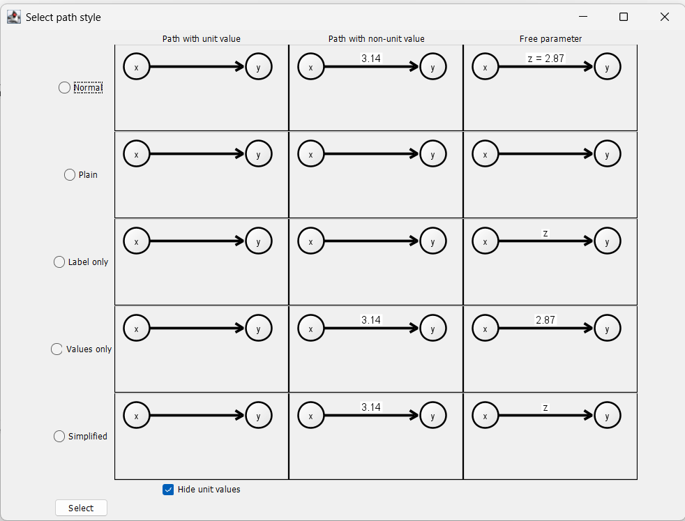

2 Basic Modeling
To create a model, either right-click on the empty desktop and select “Create new Model -> Create Empty Model” or double-click on the desktop. This creates an empty model view

You can now add variables, by either right-clicking on the empty view and selecting “Create Variable”. Then you can either add a latent variable (depicted as a circle), an observed variable (depicted as a rectangle), a constant variable (depicted as a triangle). Beyond standard RAM notation , you can also add a multiplication node that allows you to model latent interactions. As a short-cut, you can simply double-click on an empty space in the model, to create a latent variable or double-click while holding down the SHIFT-key to add an observed variable.
To add a path between two variables, press the right mouse button on a variable, hold it down while dragging the path on to the target variable, then release the mouse button. This creates a regression path with a value fixed to “1” between the variables. When you hold down SHIFT while doing so, you create a covariance path. Right-click the path and select “Free Parameter” if you want this path to be freely estimated.

Try to add a latent and an observed variable and connect them with a path from the latent to the observed variable, and your model should look like this:

2.1 Changing Visuals
Onyx has a variety of options to adjust the appearance of the graph. Right-click on a node and choose “Customize Variable” to explore various options to adjust font size, line colors, fill colors, etc. The same is possible if you choose “Customize Path” when you right-click on a path.
2.2 Renaming Parameters
If you free a parameter on a path (representing either a variance, covariance, a regression, or a mean), you can change the name of the parameter by right-clicking on the path and then changing the “Path Name”. By default, these parameters are named based on the adjacent variables but you can choose your own name here.

Note that Onyx has Unicode support, that is, you can directly use unicode characters such as letters from the greek alphabet. Thus, it would even be possible to use emojis as parameter labels even though I do not recommend that:

Onyx further supports a very limited subset of LaTeX commands to render parameter labels. This pseudo LaTeX input is triggered by starting labels with a dollar sign. This pseudo input supports lowercase and uppercase greek letters, as well as subscript and superscripts. Here are some examples that are valid parameter names in Onyx:
| Input | Output |
|---|---|
| \(\alpha\) | |
| ^2 | \(\beta^2\) |
| _{person} | \(\gamma_{person}\) |
| ^2_i | \(\Omega^2_i\) |
2.3 Diagram Styles
Onyx ships some pre-made styles for your graphs. Choose “Customize Model -> Apply Diagram Style” and then choose from the available choices. Certainly, not all of them are useful for scientific communication but you may want to start with Modern or Modern/Lightblue. Further, you may want to choose “Keep Style on Edit”, which continues to automatically apply the chosen style to newly added variables or paths in the diagram (otherwise, they are added using the default style).

Here are three examples of styles:

2.4 Path Styles
By default, Onyx shows path with a value fixed to one without any label. Paths that have a value fixed but different than one are shown with the value as label. Freely estimated parameters are shown with both their label and their value (e.g., “z = 2.87”). You can also choose different path styles by right-clicking on a model, then selecting “Customize Model -> Change Path Style”. This opens the following window in which you can select among several alternative options. In particular, the option “Simplified” may be useful to create figures for manuscripts.

2.5 Exercises
- Create a factor model with one latent factors, four observed variables, residual variances for each factor, a latent factor variance, and factor loadings; fix the first factor loading at “1” and let the others be freely estimated; also freely estimate all residual variances; rename the observed variables to “item1”, “item2”, …; rename the factor to “factor”, rename the factor loadings to lambda1, lambda2, … but use greek letters.
- Apply diagram styles and make your own modifications
- Export the diagram as image file